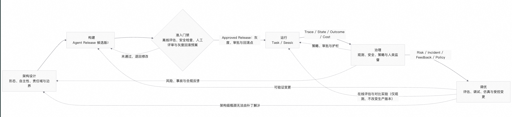

第 2 章 Agentic Application 参考架构¶
在上一章中，我们将 Agentic Application 定义为 Agent 在应用形态层的完整表达，并将 Agent 拆解为 Model 与 Harness 两个部分。模型是认知核心，但可靠性不能寄托于模型本身；Agent 需要获得一定的任务自主权，同时必须由确定性系统来约束其能力、环境和影响范围。这一判断直接改变了架构对象：企业需要设计的不再仅是一次模型调用，而是一个跨越认知、状态、执行、控制和持续改进的完整系统。
架构设计的难点不在于罗列尽可能多的组件，而在于划分责任边界。Model 与 Harness 的边界不清，会让模型升级变成应用重构；组织任务循环的编排逻辑与承载任务的 Runtime 不分，会让任务语义与基础设施强绑定；Context 与 State 不分，会将不完整的对话历史误当成可恢复的任务事实；沙箱、权限和工具描述混在一起，则会将模型知道某个工具误解为模型有权执行某个操作。这四类边界问题在演示阶段通常不会暴露，却会在任务变长、工具变多和租户变多之后集中出现。
本章节给出一套厂商中立的 Agentic Application 企业级参考架构。它不要求每个应用都建设全部组件，而是为先识别业务与应用约束，再确定 Agent 的构建与编排方式、生产运行条件、治理控制要求和调优闭环，从而形成与任务风险相匹配的最低充分架构。
第 1 章提供应用形态和核心概念，本章把这些概念落实到责任域、组件关系、平台边界和生命周期决策，并为后续的构建、运行、治理与调优四篇建立统一坐标系。
2.1 架构全景¶
2.1.1 用三个视图理解同一套系统¶
对 Agentic Application 进行架构设计时，需要同时使用三个互相正交的视图，它们描述的是同一套系统的不同侧面，而不是三套可以互相替代的架构。
组件视图回答：系统由什么组成。
它关注 Model、Harness 编排层、Context、State、Memory、Knowledge、Skill、Tool、Runtime、Sandbox、Gateway、Observability、Evaluation 和 Security 等能力，以及它们之间的调用与依赖关系。组件视图的价值是避免能力遗漏，尤其是避免把上下文管理、状态持久化和结果验证当成实现细节。
平台视图回答：这些组件在哪里运行，由谁负责。
它把企业系统划分为执行面、数据与资源面以及控制面，并解释 Gateway、身份、租户、策略和可观测如何联动。平台视图的价值是避免责任混乱：同一个能力可能由应用团队实现，也可能由共享平台提供，二者的成本、扩展性和治理强度并不相同。
生命周期视图回答：系统如何从架构决策走向运行，并在运行中被治理和改进。
它将架构决策、版本、任务、Trace、Policy、Dataset、Evaluator 和 Patch 组织成架构设计、构建、运行、治理、调优的闭环。生命周期视图的价值是避免把一次性的 Agent 演示误当成可持续运营的企业系统。
三个视图不能互相推导。组件齐全并不意味着责任清晰，责任清晰也不意味着变更可控。因此，在讨论某个能力时，需要明确当前处于哪个视图：同一个 State Store，在组件视图中是任务事实的持久化能力，在平台视图中属于数据与资源面，在生命周期视图中则是运行阶段产生、调优阶段被反复读取的证据来源。
2.1.2 五个能力责任域¶
图 2-1 从组件视图展示参考架构的五个能力责任域。图中粗实线表示从业务目标到任务执行的主要关系，域内细实线表示组件之间的调用与读写，虚线表示版本、身份、策略、观测、评估和变更证据等横向作用。这里的“层”用于组织架构责任，不表示严格的调用栈或建设顺序。图中缩写包括大型语言模型（Large Language Model，LLM）、应用程序编程接口（Application Programming Interface，API）、模型上下文协议（Model Context Protocol，MCP）和智能体间协议（Agent-to-Agent，A2A）。
图 2-1 Agentic Application 企业级参考架构（组件视图）

业务与应用层
定义用户、业务目标、交互方式、任务组织形态和验收条件。一个 Agentic Application 可以由对话触发，也可以由 API、消息、定时器或业务事件触发；任务可以由 Single-Agent 承担，也可以因跨时间持续执行形成 Long-Horizon Agent，或因角色分工与协作形成 Multi-Agent，还可以与 Workflow 组合为 Hybrid。这些名称分别描述执行主体、时间跨度和组合方式，并非互斥的同一分类维度。该层不实现通用 Agent 能力，而是明确系统为什么存在、需要完成什么，以及什么结果可以被业务接受。
Agent 构建与编排层
将 Model、Harness 编排逻辑、Context 策略、Memory、Knowledge、Skill，以及 Tool、Protocol 和 Connector 的能力定义组合成能够观察、判断、行动并接受反馈的任务循环。这里的“构建”不是一次性的开发活动：被构建出的编排逻辑会在每次任务运行时持续工作。外部系统、浏览器、Shell 和代码执行环境不属于这一层；本层只描述和绑定可用能力，实际执行及影响范围由生产运行层承载。
生产运行层
承载跨时间、跨请求的任务，提供调度、状态持久化、工作区、隔离、恢复、流量治理和资源管理。治理与控制层定义谁可以发布、运行和修改 Agent，哪些资源可以被访问，版本如何流转，以及策略如何下发、执行和审计。前者回答任务能否稳定执行，后者回答哪些版本和动作被允许发生。治理判定点可以分布在 Harness、Gateway、Runtime 与 Sandbox 的请求路径上，但策略、版本和审计语义需要集中管理。
治理和控制层
调优层
从运行中获得 Trace、Metric、Log、成本、结果和反馈，通过评估、安全分析、仿真和实验定位问题，形成候选变更与验证证据。调优层不直接修改生产中的 Agent；变更必须回到 Agent 构建与编排层形成新版本，并经过治理与控制层的准入门禁后再进入生产运行层。Trace、Metric 与 Log 的采集发生在运行路径上，指标口径、评估基线和准入阈值则由治理与调优责任共同定义。
其中，Security 不是只属于调优层的单一组件，而是横跨五层的架构责任：业务层确定风险与验收边界，构建层实现安全约束和验证逻辑，运行层提供隔离与执行控制，治理与控制层定义身份、策略和审计，调优层通过安全评估、红队和仿真验证这些措施是否有效。图中的 Security Analysis 仅表示调优侧的安全分析能力。
2.1.3 企业级架构设计原则¶
结合 AWS、Google、Microsoft、Anthropic、LangChain 和 OpenAI 自 2025 年下半年以来的公开架构与工程实践，企业级 Agentic Application 呈现出五项相对稳定的设计原则。
原则一是 Model 与 Harness 解耦。模型是可替换的认知核心，Harness 是与任务、环境和组织要求相关的工程外壳。模型升级可能使某些补偿性 Prompt、工具或循环控制失效，因此模型与 Harness 必须放在一起评估，但不应在实现上强绑定。
原则二是编排层与 Runtime 解耦。编排层定义 Agent 如何思考和行动，Runtime 定义任务在什么资源和故障条件下持续运行。将两者分开，才能在不重写任务逻辑的前提下切换托管或自托管 Runtime，也能在 Runtime 更换进程、节点或区域时恢复同一任务。
原则三是状态外置，执行实例可替换。会话、计划、待办、工具结果、工作区、记忆和制品不应只存在于模型上下文或某个 Runtime 的内存中。持久事件、Checkpoint 和外部工作区是长任务恢复与分布式运行的前提。
原则四是自主性必须与权限和可验证性匹配。Agent 获得的工具、网络、数据和凭证越多，潜在的影响半径（Blast Radius）越大。系统应通过最小权限、短期凭证、网络出站控制、Sandbox 隔离、结果校验和高风险动作审批共同建立边界。
原则五是可观测、安全和评估是运行前提，而不是上线补丁。Agent 的输出取决于模型、编排逻辑、工具、上下文、预算和环境的组合。如果不记录轨迹和环境结果，不但无法定位问题，也无法复现评估或证明版本改进。
这五项原则本身不要求把系统做大：它们要求的是，凡是被授予的自主性，都必须有与之匹配的边界、证据和验证手段；凡是暂时不需要的能力，可以不建设，但需要明确在什么条件下必须补齐。
2.2 构建与编排：Model、Harness 编排、Context 与能力连接¶
2.2.1 Model：可替换、可路由的认知核心¶
在 Agentic Application 中，Model 承担语义理解、推理、规划、结构化生成、多模态处理和工具调用决策。但模型选择不应简化为一次性的厂商选型，而应当是一个与任务、Harness 和运行策略相关的持续决策。
企业至少需要从五个维度评估模型：对目标领域和任务类型的基础能力；长上下文中的指令遵循、信息筛选和抗干扰能力；工具参数生成、工具结果理解、错误修正和多步调用的稳定性；延迟、价格、上下文成本、并发限制和区域可用性；以及数据保留、隐私、合规、私有化和运营边界。前三项决定 Agent 能否完成任务，后两项决定它能否在企业内规模化运行。
复杂的 Agentic Application 不必依赖单一模型完成所有任务。规划、执行、摘要、检索、评审和内容审核对模型能力、延迟和成本的要求不同，可以通过 Model Router 按任务类型、预算、数据边界和当前负载进行路由。但每一条路由和降级策略都会改变 Agent 行为，因此必须与完整 Harness 一起进行回归评估，不能把协议兼容当成能力等价。一种需要防范的失败模式是：降级模型在协议层可以正常返回工具调用，但在多步任务中丢失中间约束，最终产生的是一次结构合法却结果错误的执行。
2.2.2 Harness 编排：把概率性判断组织成可控执行¶
本白皮书在第 1 章使用的广义 Harness 一词，指模型之外用于组织、约束并承载模型驱动任务执行的全部工程系统，其中包含 Runtime、Sandbox、Observability 与 Governance。业界的用法与此接近：LangChain 将 Harness 概括为“模型之外的一切”，Microsoft 则将它描述为让语言模型能够执行工作的运行时脚手架（Runtime Scaffolding）。
进入工程实现层后，广义 Harness 需要继续拆分，否则“Harness”会同时指代任务语义与基础设施，使责任无法归属。因此本章将其中直接组织任务循环的这一子域称为 Harness 编排层，并给出一个更窄、责任更易归属的定义：
Harness 编排层是位于模型与运行环境之间，用于构造上下文、组织任务循环、提供能力、约束行为并验证中间结果的代码、配置与执行逻辑。
Harness 编排层是 Agentic Core 的中枢，也是责任边界所在：它决定模型看到什么、能调用什么、什么时候停止，以及结果在交付前需要通过哪些验证。需要强调的是，Harness 编排层与广义 Harness 不是两个概念，而是同一概念在不同粒度上的表达：广义 Harness 回答模型之外还需要什么，Harness 编排层回答其中哪一部分持有任务语义。当本章将 Runtime、Sandbox、Gateway、Observability 和 Governance 与 Harness 编排层并列时，是在广义 Harness 内部做责任划分，而不是把它们排除在 Harness 之外。
一个生产级的 Harness 编排层通常包含表 2-2 所列能力。表中第三列是本白皮书对生产失效模式的归纳，用于说明该能力为何不可省略，而不是对公开案例的统计。
| 能力 | 主要职责 | 缺失时的常见失效模式 |
|---|---|---|
| Agent Loop 与终止条件 | 模型调用、工具调用、结果回送、重试、停止、恢复与预算约束 | 任务无法收敛，出现无终止循环或预算失控 |
| Instruction 与 Context Engineering | 系统指令、任务说明、历史、工具描述、记忆、检索结果与环境状态的选择与编排 | 关键信息被淹没，模型在长上下文中偏离目标 |
| Planning 与 Delegation | 待办列表、阶段目标、子 Agent、并行执行、Handoff 与结果聚合 | 复杂任务缺少阶段划分，失败后无法定位与续接 |
| Tool 与 Skill 管理 | 能力注册、渐进式披露、参数校验、结果截断、大结果外置与工具失败分类 | 工具描述挤占上下文，工具错误被当成模型错误 |
| Middleware 与 Policy Hook | 在模型调用、工具调用、状态变更和输出前后执行权限、审批、审计、内容过滤与自定义逻辑 | 策略只能依赖提示词，模型可以绕过约束 |
| Compaction 与 Continuation | 对话压缩、上下文重置、文件式交接与跨上下文窗口的任务续行 | 长任务在上下文耗尽时中断，或压缩过程改变任务事实 |
| Steering、人在回路（HITL，Human-in-the-loop）与 Verification | 运行中修正目标、在关键动作前请求审批，并在结束前执行测试、评审、结果完整性检查与环境状态验证 | 高风险动作缺少人类监督，任务“看起来完成”但结果不可信 |
表 2-2 Harness 编排层的核心能力
Harness 编排层不是静态能力清单，而是一个需要与模型共同演进的系统。Anthropic 在长时间运行的应用开发中发现，模型能力增强后，为弥补旧模型缺陷而设计的复杂脚手架可能反而限制新模型，因此脚手架需要随模型迭代重新评估甚至简化。另一方面，LangChain 公开的工程实践表明，在模型固定的前提下，通过 Trace 分析、错误聚类、完成前验证和循环检测（Loop Detection）优化编排逻辑，同样可以改变任务的完成质量。这两类证据共同说明：编排层本身是决定 Agent 能力的可评估对象，既不能一次设计定型，也不能默认越复杂越好。
Harness 编排层与 Agent Runtime 的分工需要在架构设计阶段就明确。编排层负责语义层面的决策：下一步做什么、是否需要审批、上下文如何重建、任务是否达成。Runtime 负责物理层面的保障：任务在哪个实例执行、如何排队与限流、进程中断后从哪个 Checkpoint 恢复、资源与配额如何回收。二者的接口应当是任务与状态，而不是函数调用细节；一旦编排层直接依赖某个 Runtime 的内存结构，原则二就已经被破坏。
2.2.3 Context、State、Memory、Knowledge 与 Skill：不要用一个上下文包含一切¶
上下文窗口是模型当前能够看到的内容，而 Agentic Application 需要管理的信息远超一个上下文窗口所能容纳的范围。架构上至少应区分五类对象，如表 2-3 所示。
| 对象 | 主要问题 | 典型内容 | 生命周期与一致性要求 |
|---|---|---|---|
| Context | 这一次模型调用应该看到什么 | System Prompt、任务说明、历史摘要、工具描述、检索结果、当前环境状态 | 单次模型调用级，持续被重建，不作为事实来源 |
| State | 任务已经发生了什么，应从哪里恢复 | Session、Task、Plan、Todo、Checkpoint、工具调用状态 | 任务级，需要强一致的事实记录与持久化 |
| Memory | 过去哪些交互经验对当前任务有用 | 用户偏好、历史决策、跨会话事实、任务经验 | 跨任务与跨会话，需要写入策略、更新、遗忘与隐私治理 |
| Knowledge | 组织已有哪些外部知识可供检索 | 业务文档、规范制度、产品资料、RAG 索引与知识库 | 与组织内容同步，需要权限过滤、时效管理与来源可追溯 |
| Skill | 某类任务应该怎么做 | 说明、脚本、模板、Workflow、检查清单与可验证方法 | 作为版本化能力资产发布、复用与回滚 |
表 2-3 Context、State、Memory、Knowledge 与 Skill 的区分
本白皮书将 Memory 与 Knowledge 分列，原因是二者的写入方式与治理责任不同：Memory 由 Agent 在运行中生成，风险在于错误经验被反复沿用，因此需要写入门槛与遗忘机制；Knowledge 来自组织既有内容，风险在于权限越界与信息过期，因此需要与源系统的权限模型和更新周期对齐。把两者放进同一个向量库，往往会同时失去这两类治理能力。
Context Engineering 的本质不是把所有内容塞进更长的窗口，而是在正确的时间选择正确的信息。可以通过摘要、工具结果卸载、按需检索、Skill 渐进式披露、子 Agent 上下文隔离和文件式交接，把稀缺的模型注意力留给当前决策。同时，必须将可恢复任务的真实状态保存在模型上下文之外：如果压缩、截断或模型误读能够改变任务事实，任务就失去了可恢复性，长任务与多智能体协作也无从谈起。
2.2.4 Tool、Protocol 与 Environment：从接口调用到受控行动¶
Tool 是 Agent 可以请求的一项能力，Protocol 定义能力如何被描述、发现、调用和返回，Environment 则是这些能力真正产生影响的空间。三者经常被混为一谈，但它们的失效方式并不相同：Tool 的问题通常是描述不清或参数校验缺失，Protocol 的问题通常是能力发现与权限授予被混淆，Environment 的问题则是影响范围超出预期。
Function Calling 为模型提供结构化工具调用；MCP（Model Context Protocol，模型上下文协议）将工具、资源和 Prompt 抽象为可以跨应用复用的协议能力；A2A（Agent-to-Agent）与其他 Agent 协作协议则用于 Agent 之间的能力发现、任务委派和状态交换。Browser Use、Computer Use、Shell 和 Code Interpreter 进一步将能力从粗粒度 API 扩展到通用计算环境，使 Agent 能够处理没有 API 的系统，同时也明显扩大了影响半径。
但能力被发现，不等于能力已被授权；工具参数符合 Schema，不等于工具意图符合用户目标；命令在 Sandbox 中成功运行，也不等于结果可以安全地影响生产系统。因此，一次受控行动至少需要经过六个环节：能力选择、身份与权限判定、参数校验、隔离环境执行、结果校验，以及状态与审计记录。这六个环节分布在 Harness 编排层、Gateway、Sandbox 和平台控制面，任何一个环节缺失，都会把模型建议的动作直接变成系统执行的事实。
上述 Agentic Core 的具体构建方法，将在第 3 至第 6 章分别从任务组织、Harness 工程、能力资产以及工具与协议四个方面展开。
2.3 生产运行与治理控制：Runtime、Sandbox、State 与 Gateway¶
2.3.1 从能跑到能够持续运行¶
开发者可以在一个进程内构建完整的 Agent Loop，并让它在本地终端中完成任务。但当任务持续时间从秒级延长到小时级、天级甚至周级，当同一 Agent 同时服务多个用户和租户，当它拥有文件、网络、数据库和企业凭证时，问题就从一个程序内的循环扩展为分布式系统、安全隔离和企业治理问题。
生产执行基础需要回答一组具体问题：任务如何被接收、排队、调度和取消；长任务在实例重启、节点故障或模型上下文重置后如何继续；文件、命令、包管理器、浏览器、网络和 Secrets 如何隔离；不同租户的状态和成本如何归属；以及模型、工具和 Agent 调用如何经过统一的流量入口。这些问题在演示环境中可以回避，在生产环境中无法回避，因此它们属于架构设计阶段必须给出答案的内容，而不是上线后的运维细节。
2.3.2 三个平面的责任划分¶
传统基础设施中的 Data Plane 常指真实处理请求与转发流量的那一平面。在 Agent 系统中，“数据面”这一译法容易与业务数据、记忆和任务状态混淆。本白皮书因此将企业 Agent Platform 划分为执行面、数据与资源面，以及控制面，如表 2-4 所示。
| 平面 | 主要责任 | 管理对象 | 关键性质 |
|---|---|---|---|
| 执行面 | 真实运行 Agent Loop、工具与环境操作 | Runtime Worker、Task、Session、Queue、Sandbox、Gateway 数据路径 | 可弹性、可失败、需隔离，尽可能不持有唯一真实状态 |
| 数据与资源面 | 保存可恢复事实，并提供 Agent 可访问的能力 | Task State、Event Log、Checkpoint、Workspace、Artifact、Memory、Knowledge、Model、Tool、MCP Server | 必须定义一致性、所有权、保留期、隐私和租户边界 |
| 控制面 | 定义版本、身份、策略、部署、配额与改进动作 | Agent Registry、Model/Tool Registry、Tenant、IAM（身份与访问管理）、Policy、Budget、Deployment、Observability、Evaluation、Audit | 集中定义、版本化、可审计、可回滚，判定点可分布 |
表 2-4 执行面、数据与资源面、控制面的责任划分
控制面不应成为每次模型或工具调用的强同步依赖。一种更稳健的模式是策略集中定义，判定点分布式执行：控制面管理策略、版本和发布，Harness 编排层的 Middleware，以及 Gateway、Runtime 与 Sandbox，在请求路径上根据已下发策略进行判定，并将审计事件异步送回控制面。这样既能保持统一治理，又能避免控制面故障直接中断所有 Agent 任务。这一模式的代价是策略存在传播延迟，因此高风险策略（如凭证吊销、租户封禁）通常需要辅以强制刷新、短期凭证或集中校验等机制来兜底。
2.3.3 Runtime 与 Sandbox 的边界¶
Agent Runtime 管理任务生命周期。它将外部请求转换为 Task，为任务绑定 Harness 版本、身份、租户、预算和执行环境，处理排队、并发、暂停、取消、超时、重试、Checkpoint 和 Recovery。对长任务而言，Runtime 不只是托管一个 Web 进程，而是一套持续执行系统：它必须假设任何一次执行都可能在任意步骤被中断，并保证任务可以从外部状态继续，而不是从头重试。
Sandbox 限制行动的影响范围。它需要同时控制文件系统、进程、CPU、内存与存储、包安装、网络访问、Secrets 注入和数据出站。隔离粒度应根据风险选择：进程级隔离成本低但边界弱，容器适合大多数通用任务，微虚拟机、独立虚拟机或独立账号适合执行不可信代码和处理高敏感数据的任务。需要明确的是，Sandbox 是基础隔离，它约束的是行动的技术可达范围，不回答某个动作是否获得授权、是否符合业务意图，以及结果是否正确。这三个问题分别由工具权限判定、业务审批和结果校验承担。
2.3.4 State Store、Workspace 与 AI Gateway¶
State Store 与 Workspace 使任务脱离单个执行实例。Event Log 记录发生过的事实，Checkpoint 保存可恢复位置，Workspace 保存 Agent 可读写的文件、中间产物和能力配置，Artifact Store 保存可交付结果，Memory 与 Knowledge 则提供跨任务信息。这些对象的一致性要求并不相同：Event Log 与 Checkpoint 需要强一致与顺序保证，Workspace 需要可快照与可回滚，Artifact 需要可寻址与可保留，Memory 与 Knowledge 需要可检索与可治理。把它们全部放入同一个向量库或会话记录中，通常意味着放弃了其中大部分要求。
AI Gateway 是跨执行面和控制面的策略执行点。按治理对象的粒度，可以区分三层：LLM Gateway 以模型调用为粒度，处理协议适配、路由、限流、降级、容灾和 Token 成本；MCP Gateway 以工具调用为粒度，处理 Server Registry、凭证托管、工具级 ACL 和审计；Agent Gateway 以任务为粒度，处理 Agent 路由、会话连续性、租户配额和预算。上述三层划分是本白皮书为区分治理粒度所做的归纳，并非某一厂商的既有产品定义；在具体实现中，三者可以是同一 Gateway 的不同能力，但治理对象和粒度必须区分，否则模型成本、工具权限和任务预算会在同一处策略中互相覆盖。
2.3.5 部署拓扑与企业选型¶
参考架构不要求企业从第一天就建设一个大而全的 Agent Platform。表 2-5 列出四种常见的部署形态。
| 部署形态 | 适用场景 | 优势 | 主要代价 |
|---|---|---|---|
| 应用内嵌 SDK，直连模型与工具 | 原型、低风险、单应用 | 简单、快速，调试链路短 | 状态、密钥、观测与策略容易分散到各应用 |
| 托管 Harness 与 Runtime | 快速进入生产，数据边界允许 | 持久执行、隔离、扩缩容和可观测由平台提供 | 厂商绑定、扩展边界受限，数据与合规需逐项确认 |
| 托管控制面 + 私有执行面 | 希望共享管理能力，同时保持数据和工具在域内 | 管理与执行解耦，平衡效率与数据边界 | 控制面连通、版本兼容和跨域审计更复杂 |
| 全自托管或混合云 Agent Platform | 高合规、大规模，需深度定制或多环境运行 | 数据、策略、扩展和基础设施完全可控 | 建设和长期运营成本最高，需要专门平台团队 |
表 2-5 四种部署形态的适用场景与代价
选型时，应先判断哪些能力构成企业自身的差异化资产，再判断哪些横切能力适合平台化。业务特有的 Prompt、Skill、Tool、评估标准和人机协作流程通常属于差异化资产；模型接入、任务托管、沙箱、状态存储、身份、可观测、评估基础设施和安全策略更适合成为共享平台能力。
一个实用的原则是：平台提供安全且可运营的默认路径，应用保留对模型、Harness 编排和业务能力的组合选择权。如果平台试图封装所有 Agent 差异，就会迅速退化为只能满足最低共同需求的平台，业务团队将绕过平台自建；如果平台只提供计算而没有策略、状态、观测和评估，则无法解决企业 Agent 的真实共性问题，每个应用都要重复解决同一批治理问题。
2.4 生命周期架构：架构设计 → 构建 → 运行 → 治理 → 调优¶
2.4.1 Agent Release：生命周期的最小可复现单元¶
传统应用也有开发、测试、部署和运维生命周期，但 Agentic Application 增加了一个特殊问题：应用行为不仅取决于代码，还取决于模型、Prompt、当前 Context、Memory、Knowledge、Skill、Tool、Harness 编排逻辑、预算和运行环境的组合。其中任意一项变化，都可能改变 Agent 的执行轨迹与最终结果。
因此，生命周期的最小发布单元不应只是一份应用代码，而应是一个可复现的 Agent Release。它至少需要绑定六类要素：模型及其版本、参数、推理预算与路由策略；Harness 编排代码、配置、循环控制、Middleware 与终止条件；Prompt、Context Policy、Memory Policy、Skill 与 Knowledge 版本；Tool、MCP 与 Agent 能力清单、权限策略和凭证范围；Runtime、Sandbox、资源、网络与数据保留配置；以及评估数据集、Evaluator、基线、准入阈值和已知风险。
只有当这些要素可追踪时，企业才能回答生产中某个任务究竟使用了哪一个 Agent Release，才能对失败进行复现，并在变更后证明质量确实提升，而不是仅仅发生了变化。反过来，如果 Prompt 可以在生产中随时修改而不留版本，任何评估结论都只对当时那一刻成立。
2.4.2 五阶段闭环¶
图 2-2 展示本白皮书的生命周期主线。这不是一条只向前的瀑布流程，而是一个由生产事实驱动新版本、并在必要时回到架构决策的循环。

图 2-2 架构设计 → 构建 → 运行 → 治理 → 调优的生命周期闭环
| 阶段 | 核心问题 | 主要输入 | 主要产物 | 准入或反馈机制 |
|---|---|---|---|---|
| 架构设计 | 用什么形态、多大的自主性和什么边界来解决这个业务问题 | 业务目标、任务结构、风险等级、数据敏感度、时间跨度与合规要求 | 形态选择、责任域划分、Harness 与 Runtime 边界、权限与数据边界、可观测与评估口径、架构决策记录 | 架构评审、威胁建模、影响半径评估与最低充分架构判断 |
| 构建 | 如何把架构决策实现为可复现的 Agent Release | 架构决策、能力资产、模型、工具与知识 | Agent 定义、Harness 编排、Prompt、Context Policy、Skill、Tool Policy、评估基线、候选版本 | 离线评估、安全检查、人工评审与发布门禁，通过后成为 Approved Release |
| 运行 | 如何可靠、隔离且可恢复地执行任务 | Agent Release、任务、身份、租户、预算和环境 | Task、Session、Event、Checkpoint、Artifact、Trace、Cost、Incident | Runtime 状态机、Sandbox、Gateway、实时策略与失败恢复 |
| 治理 | 如何看见、约束、审批和追责 | Trace、身份、工具调用、数据访问、成本、反馈和异常 | Policy、Approval、Audit、Alert、SLO（服务水平目标）、风险发现与治理动作 | 最小权限、在线检查、行为监测、人类监督与应急处置 |
| 调优 | 如何复现并证实问题、生成改进并安全发布 | 生产 Trace、失败案例、用户反馈、标注和安全发现 | Dataset、Evaluator、Experiment，以及 Prompt、Context、Skill 与 Harness 补丁、仿真结果 | 回归、对比实验、红队、仿真、灰度、审批和回滚 |
表 2-6 五阶段生命周期的责任划分
本白皮书把架构设计列为生命周期的第一个阶段，而不是让它隐含在构建之中。原因是形态选择、自主性授予、责任域划分和权限边界一旦确定，后续构建、运行、治理和调优的成本区间基本被锁定。把这些决策留给构建阶段隐式完成，等价于让实现细节反向定义架构约束，而这类问题往往只能通过重构而非补丁解决。图 2-2 中由治理和调优指回架构设计的两条虚线，正是为了给这种情况留出显式路径：当风险来自形态选择或权限模型本身，而不是某个 Prompt 或某次工具调用时，正确的动作是重新设计架构，而不是继续叠加补丁。
2.4.3 治理既是阶段，也是横切约束¶
本白皮书将治理作为独立的一篇展开，是因为 Agent 进入生产后，可观测、多智能体身份、工具权限、数据边界、成本、人工审批和安全责任会成为集中问题，需要统一的方法与责任人。但这不意味着治理只在运行之后发生。
治理能力在生命周期各阶段有不同形态：权限模型和数据边界在架构设计阶段确定，工具策略、审批点和审计字段在构建阶段实现，Sandbox、Gateway 与 Runtime 在运行阶段执行既定策略，Observability 与安全分析在治理阶段持续检测风险，Evaluation 与 Simulation 在调优阶段验证变更是否引入新风险。因此，治理既是一类持续运营活动，也是贯穿全生命周期的架构约束。一个可用于自检的标准是：如果某项治理要求只能在上线后通过流程和人工补齐，而不能在架构和构建阶段落到策略、接口或数据结构上，那么它在规模化之后很可能会失效。
2.4.4 从生产证据到受控变更¶
调优不等于让 Agent 在生产中自由修改自己。任何由模型、反馈或轨迹生成的 Prompt、Memory、Skill 或 Harness 补丁，都应被视为候选变更，需要经过可复现评估、安全检查、版本化、灰度和可回滚发布之后才能进入生产。这正是图 2-2 中调优产生的变更不直接进入运行、而是回流到构建并重新经过准入门禁的原因：可控的改进比无审批的自我修改更符合企业级自进化的定义。图中由调优指向运行的虚线只表示在线评估与对比实验的观测通道，用于在真实流量中获取证据，并不意味着变更可以绕过构建与门禁进入生产。
这一约束也解释了为什么运行阶段必须产出结构化的 Trace、状态和成本事实。没有可复现的证据，调优只能依赖主观印象；没有版本化的发布单元，即使找到了改进方向，也无法证明改进确实来自这次变更。观测、评估与发布三者构成同一条链路，缺少任何一环，闭环都会退化为一次性的人工调参。
2.5 本章小结¶
Agentic Application 的核心不是某一个框架、模型或托管服务，而是一组责任清晰、可独立演进又能通过生命周期闭环协作的系统能力。Model 提供认知核心；Harness 编排层组织和约束行为；Context、State、Memory、Knowledge 与 Skill 管理信息与能力；Tool、Protocol 与 Environment 连接真实世界；Runtime、Sandbox、State Store 与 Gateway 承载生产执行；平台控制面、Observability、Security 与 Evaluation 则建立责任与改进闭环。
除 Model 之外，上述能力在抽象层均属于第 1 章所说的广义 Harness，本章的工作是把它们落位到明确的责任域，并说明哪些适合由应用自建、哪些适合由共享平台提供。业务与应用层不属于广义 Harness，它定义的是这套系统要解决的业务问题与交互边界。
三个视图各自解决一类风险：组件视图避免能力遗漏，平台视图避免责任混乱，生命周期视图避免把一次演示误当成可运营的系统。五阶段闭环则把架构决策纳入生命周期，使形态选择、权限边界和评估口径成为可以被复核和修订的对象，而不是隐含在实现中的假设。
这套参考架构不要求所有应用使用同样复杂的组件组合。架构的目的不是把系统做大，而是对每一项被授予的自主性建立对等的执行、观测、安全和评估能力。企业应当根据任务路径的可预知程度、环境影响、数据敏感度、时间跨度和业务风险，选择足以解决问题的最低充分架构，并在生产事实的驱动下逐步演进。